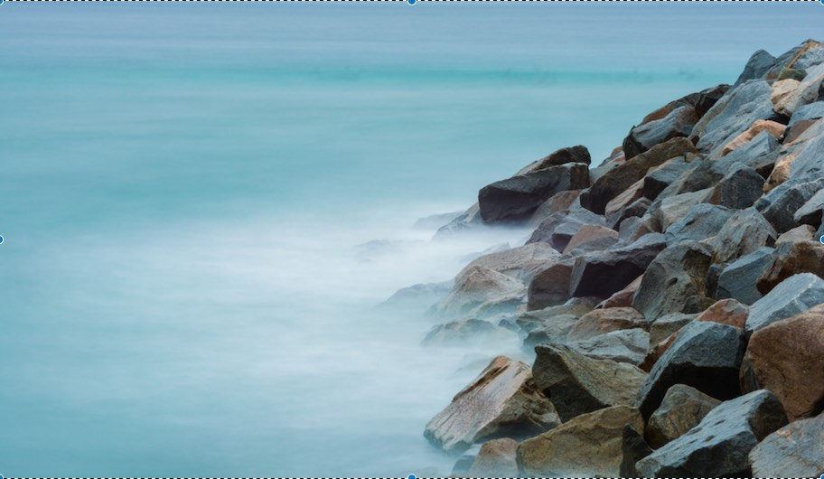
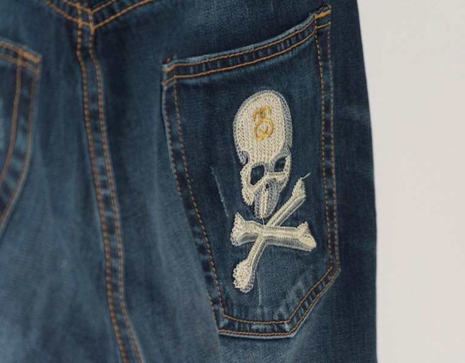

Welcome to my personal webpage! I am Nishant Chatlani - a second year GBDA student at UWaterloo. I like photography (check out page 1 for my photos).

Photography
I started taking photos when I got my first camera in 2013. Ever since then, I could not put my camera down. I decided to fuse my passions of photography and hip hop music together by becoming a concert photographer.

Fashion I am a big fan of people finding and expressing personal style. My love for everyday style turned into a great love for fashion. I love to wear, collect, and photo archive garments that catch my eye.